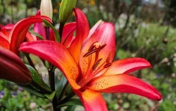

Primavera
La primavera es una de las cuatro estaciones que divide el año. Esta estación inicia con el equinoccio de primavera que ocurre entre el 20 y el 21 de marzo en el hemisferio norte, y entre el 22 y el 23 de septiembre en el hemisferio sur. Durante esta época, los árboles comienzan a reverdecer, y las plantas a florecer. Es importante resaltar que las estaciones: primavera, verano, otoño e invierno, no se presentan de la misma forma en todo el mundo, pues cada región puede tener un clima diferente.
